<ion-header style="background-color: transparent">
  <ion-row class="background" slot="top"   padding="" >
    <ion-tab-button  (click)="home()" >
      <ion-icon size="large" name="md-home"></ion-icon>
      <ion-label class="tab-title">Home</ion-label>
    </ion-tab-button>
    <ion-tab-button  (click)="search()" >
      <ion-icon size="large" name="search"></ion-icon>
      <ion-label class="tab-title">Search</ion-label>
    </ion-tab-button>
    <ion-tab-button >
      <ion-icon (click)="library()" size="large" name="md-book"></ion-icon>
      <ion-label class="tab-title">Library</ion-label>
    </ion-tab-button>
    <ion-tab-button (click)="discover()" >
      <ion-icon size="large" src="./assets/images/bnc.svg"></ion-icon>
      <ion-label class="tab-title">Entdecken</ion-label>
    </ion-tab-button>

  </ion-row>
</ion-header>
<ion-content class="ion-padding ion-margin-top background">
  <div   >
    


    <div class="ion-text-center">
      


  </div>
  </div>
  <div style="border: 2px solid #e78f84; border-radius: 6px">
    <agm-map style="height: 300px"
             [longitude]="toNum(data.latitude)"
             [latitude]="toNum(data.longitude)"
             [zoom]="15"
             [disableDefaultUI]="false"
             [zoomControl]="true">

      <agm-marker

              [longitude]="toNum(data.latitude)"
              [latitude]="toNum(data.longitude)"
             [label]="data.title">
<!--        <agm-info-window>-->
<!--          <strong  (click)="goToDetail(d)">Info</strong><br>-->

<!--        </agm-info-window>-->

      </agm-marker>

    </agm-map>

  </div>
</ion-content>
